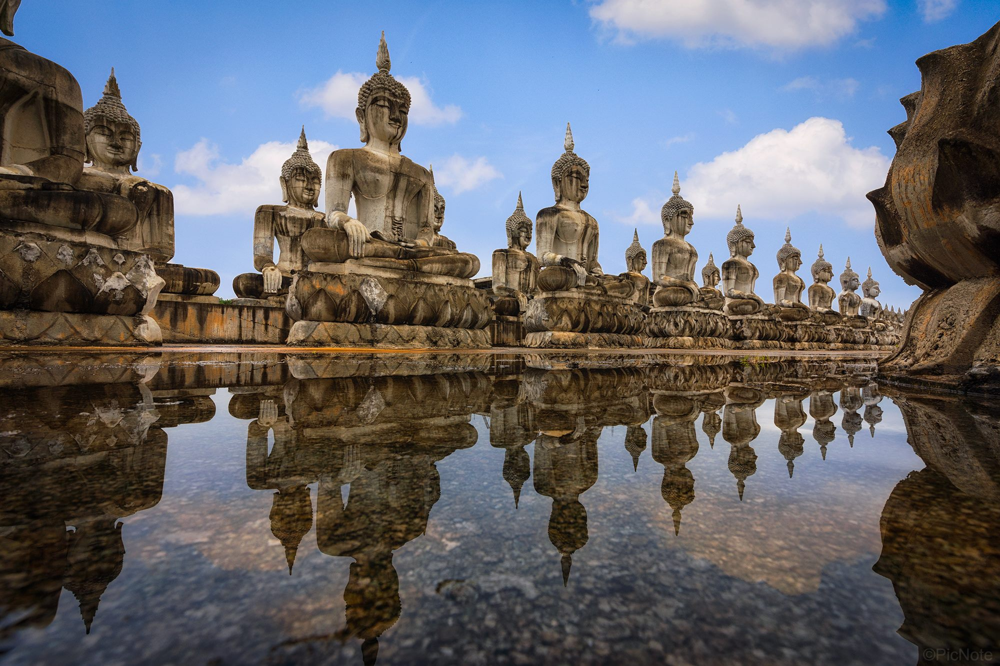

อุทยานพระพุทธศาสนา
ตั้งอยู่ในอำเภอทุ่งใหญ่ เป็นสถานที่ปฏิบัติธรรมและแหล่งท่องเที่ยวเชิงพุทธที่สร้างความประทับใจด้วยพระพุทธรูปปางต่างๆ ขนาดใหญ่จำนวนมากที่ตั้งเรียงรายอยู่กลางแจ้งสลับกับทิวเขาและทุ่งหญ้าอันกว้างใหญ่ บรรยากาศรอบข้างมีความเป็นธรรมชาติและเงียบสงบสูงมาก ไฮไลต์อยู่ที่การเดินชมความวิจิตรของพุทธศิลป์ที่สร้างขึ้นจากแรงศรัทธาของชาวบ้าน โดยเฉพาะในช่วงเช้าที่มีหมอกลงบางๆ หรือช่วงพระอาทิตย์ตกดินจะให้ภาพที่งดงามราวกับดินแดนแห่งสรวงสวรรค์ เป็นสถานที่ที่เหมาะแก่การมาพักสงบจิตใจและถ่ายภาพพุทธสถานในมุมมองใหม่ที่ดูอลังการ